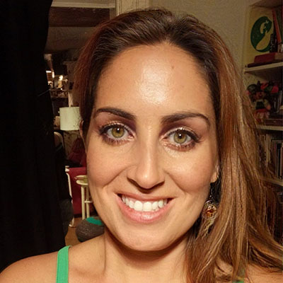

Carolina Castaño
Ha estudiado magisterio, administración y finanzas y enseñanza del español, ha vivido en muchos sitios y trabajado en diferentes sectores pero sigue en busca de una vocación. Viajera de mente abierta, se mueve por inspiración y le cuesta poco el cambio.